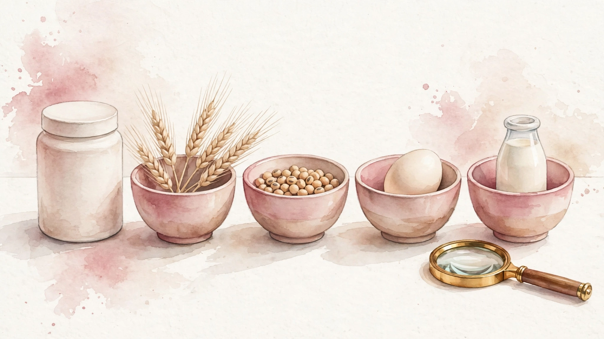

トップ ＞ インナーケア・サプリ ＞ アレルギー表示の確認ポイント
アレルギー表示の確認ポイント

食品アレルギーがある方にとって、パッケージのアレルギー表示は、買い物の前に必ず確認する大切な情報です。サプリメントは小さな粒ですが、原材料には大豆や乳、ゼラチンなど、さまざまな食品由来の素材が使われます。この記事では、表示の確認のポイントを整理します。
義務表示の品目と、推奨表示の品目がある
食品のアレルギー表示には、表示が義務づけられている品目と、表示が推奨されている品目があります。義務の対象は、えび、かに、小麦、そば、卵、乳、落花生、くるみといった品目です（制度の内容は見直されることがあるため、最新の情報は消費者庁などの公的な案内で確認してください）。これらは、原材料名の近くや、欄を分けた形で表示されます。
推奨表示の品目は、表示がある場合とない場合があります。自分の避けたい素材が推奨品目の場合は、アレルギー表示の欄だけでなく、原材料名の全体を確認する必要があります。
「コンタミネーション表示」も読む
パッケージには、「本品製造工場では、◯◯を含む製品を生産しています」といった注意書きが添えられていることがあります。これは、原材料として使っていなくても、同じ製造ラインなどで微量が混入する可能性を示す案内です。アレルギーの程度によっては、この情報も判断材料になりますので、見落とさないようにしたい表示です。
確認の順番を決めておく
私がおすすめするのは、確認の順番を自分の中で決めておくことです。まずアレルギー表示の欄、次に原材料名の全体、最後に注意書き。この順番で毎回確認すれば、見落としは減ります。買い替えでパッケージのデザインが変わったときも、油断せずに同じ手順で確認してください。表示は変更されることがあります。
この記事は表示の確認方法の一般的な案内です。食物アレルギーの診断や、個別の食品が食べられるかどうかの判断は、医師等の専門家にご相談ください。
この確認の習慣は、サプリメント以外の加工食品にもそのまま使えます。調味料、レトルト食品、お菓子。どれも表示の仕組みは共通しています。また、同じ商品でも、リニューアルで原材料が変わることがあります。「いつもの商品だから」と確認を省かず、パッケージが変わったときは改めて読み直すことが大切です。私は買い物のとき、アレルギー表示の欄を指でなぞるように確認しています。目で追うだけより、見落としが減るからです。
確認した内容は、家族とも共有しておくと買い物のときに役立ちます。誰が買っても同じ確認ができるよう、チェックの順番を言葉にして伝えておくのがおすすめです。
セラフィナ「アレルギーの確認は、買う前の大事な手順。決まった順番で、欄を見ていこう」